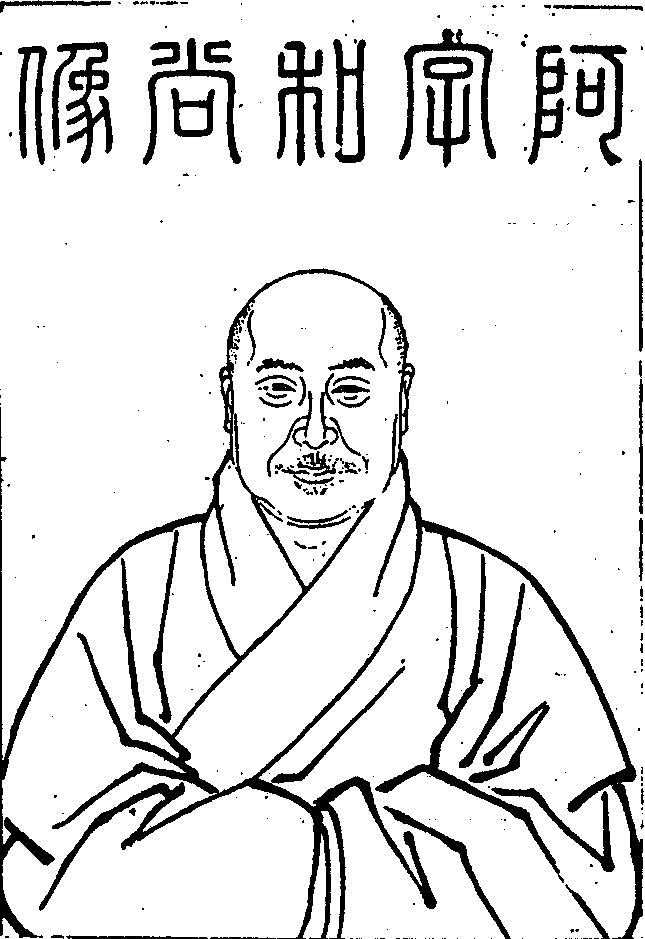

嘉興大藏經 第38冊
No.B408 海幢阿字無禪師語錄 (2卷)
【清 今無說 今辯重編（依駒本印）】
第 1 卷
阿字和尚像

栖賢老僧題
海幢阿字無禪師語錄目錄
海幢阿字無禪師語錄卷上
上堂
康熙元年元日於雷峰承堂頭天然老和尚舉師首眾上堂陞座拈香畢維那白椎堂頭和尚云山僧十二年不陞此座去年中秋承緇白諸公請繼主華首今歲元旦不請自說且道為個甚麼秖為上有所承下有所授大眾承個甚麼以竹篦子作十字授個甚麼以竹篦子作卍字承授不及一句又作麼生良久云大有人承當在聽取三偈十二年虛第一座今朝推向人天前博山縝密家風舊多少優曇且讓先趙州一字當誰莂指出稠人共法幢露刃寒光無擬處雷峰門下別商量一句早登童子籍千差曾入普賢門養成雙翮搏風起攪動滄波匯洞源侍者揖師出眾提起坐具云金鍼刺眼和尚教人今日施為兩相辜負和尚云總在闍黎分上師云教誰承當和尚云禮拜著師禮拜和尚以竹篦子指云秖者是維那白椎下座。
次日奉堂頭和尚命師分座師卓拄杖一下云諸兄弟若論此事不須一捏直得冰消復卓一下云諸兄弟若論此事大須揀點一回著到始得阿上座十三年攜瓶挈水咀嚼五味將謂有多少奇特三年前遊遼海逢人惡發扁擔頭不曾觸著半個及歸從新打失鼻孔只者個也不消得舊冬又從瓊州還將謂恁麼過時不料昨承和尚命為諸兄弟秉拂宣揚此事眾中還有一捏冰消者麼請出來相見棲賢頓監院出眾問云佛佛授受祖祖相傳今日雷峰別傳何事師卓拄杖一下進云人天眾前蒙師拈出師復卓拄杖一下進云洪波浪裏水乳難分聲色叢中誰為擇法師云退後著頓禮拜起云相看誰是知音者卻教桃李笑春風師云長安殿上新天子鳳曆初頒處處知進云今日首座新令師云卻是老兄會得頓問訊歸位云大眾分明聽取師不顧方丈石侍者出問云神龍在水作雨興雲為甚麼水與龍兩不相識師以拂子擊案云還見龍麼進云且喜把柄在手師云不勞讚歎石退後喝一喝師云眉間挂劍一句為甚麼不道石云不道不道便歸眾鐵書記出眾擬問師豎拂子云未豎已前還曾道得也未鐵復擬進師云今日新首座正令在手觸著即喪身失命鐵拂袖歸眾師遂顧左右云還有麼若無新首座謾諸兄弟去也昔大慧杲禪師居雲居首座寮因歲節秉拂云釋迦掩室於摩竭耕地種蒺藜淨名杜口于毘耶鏴錮鑄生鐵須菩提唱無說以顯道鎪飯祭閒神釋梵絕聽而雨花果有領受者直饒向上一著千聖不傳硬糾糾活潑潑棒下無生忍臨機不見師也是隔靴搔癢總不與麼落在無事甲裏且道古人具個甚麼眼目便與麼道你若不揀點便恁麼會去秖是無孔鐵錐你更如何若何兩莖眉可惜多少驀豎拄杖云者箇有甚麼揀點處有甚麼和會處三腳驢子弄蹄行新婦騎驢阿家牽口是禍門直至如今不得妙不見玄沙大師道盡大地是沙門一隻眼諸兄弟秖者一句子直是無下手處你擬向甚麼處揀點著到委悉亦是你不委悉亦是你一日十二時從朝至夜且道腳跟下錯過多少橫按拄杖云者一棒合是秉拂上座喫何故今日鼻孔索頭不合落在諸兄弟手裏卓一卓下座。
海幢浴佛日僧問世尊初生即不問未生已前請座元為眾舉揚師云未出眾已前道取一句僧便喝師云大好一喝進云大眾證取師云莫詐明頭僧拂袖歸眾僧問未離兜率已降王宮未出母胎度人已畢為甚麼又搖唇鼓舌師卓拄杖一下進云大小座元又指東畫西去也師云你喚甚麼作西東僧一喝師云恰好僧禮拜歸眾師乃云諸兄弟釋迦老子當年今日毘藍園解道天上天下唯我獨尊者一杓惡水直至如今潑不止諸兄弟且道鈍置多少時教中云世間一切群生類尟有欲求聲聞乘求獨覺者復轉少趣大乘者為希有趣大乘者猶為易能信此法倍為難你若信得此法許爾與釋迦老子同生十二時中折旋俯仰彈指謦咳無非佛之妙用且作麼生是此法莫是開佛知見入佛知見是此法麼且喜沒交涉莫是喚山作山喚水作水拄杖子喚作拄杖子是此法麼且喜沒交涉莫是如石含玉不知玉之無瑕似地擎山不知山之孤峻是此法麼且喜沒交涉賴遇跛腳阿師要一棒打殺洎合道得一半檢點將來亦是平地喫交若是海幢門下秉拂上座則不然驀拈拄杖子云拄杖子與露柱相見正說此法常說熾然說無間歇說釋迦老子被他穿卻鼻孔跛腳阿師被他打折驢腰且道秉拂上座拄杖子有甚麼長處良久云好手手中呈好手紅心心裏中紅心卓一卓下座。
海幢解夏僧問夏末秋初諸兄弟東去西去大須向萬里無寸艸處去如何是萬里無寸艸師云遍地皆是艸進云古人云出門便是艸如何是出門師云闍黎莫落荊棘裏進云古人又云直得不出門亦是艸蔓蔓如何是不出門師云大須轉身始得進云忽有人云大小座元恁麼說話正是艸蔓蔓又作麼生師云當時霍光賣受降城與單于汝道契書是甚麼人作僧一喝便禮拜師笑云聊放一著師乃卓拄杖云舉不顧即差誤擬思量何劫悟諸兄弟還委悉麼海幢法窟真歇場中以大圓覺為伽藍身心安居平等性智秖圖佛法宣揚豈愛門庭熱鬧家常茶飯淡薄過時不高扳外護但低揖時人尋常布箇撩天網子要打衝浪鯤鯨若是跛鱉盲龜蝦蟆蚯蚓有甚麼共語處教中云佛子住此地則是佛受用常住於其中經行及坐臥諸兄弟作麼生喚作此地此地又如何住者裏大有淆訛在不是同床睡焉知被底穿所以荒村陋院莫挂瓶盂佛祖玄關橫身直過果然如是從教鬼面神頭正眼覷來大好一場笑具到者裏言所不能言步所不能步不妨刮龜毛于鐵牛角上截兔角于石女腰邊雖然如是猶是九十日內事九十日外一句作麼生道良久云昨夜月明中撞著劉幽求腮邊微笑暗點頭且道笑箇甚麼笑道蟭螟蟲巢蚊子眼睫上高聲大叫土曠人稀相逢者少下座。
海幢六月朔師陞座卓拄杖一下云諸兄弟恁麼會得千足萬足復卓一下云諸兄弟恁麼會得千曲萬曲空裏無花眼中有過六門鑑覺不是家珍向上翻身猶為病語諸兄弟據實而論有甚麼得與不得命根有甚麼斷與不斷手有甚麼撒與不撒如今有一干學得氣似獰龍三拳兩掌儘自不少只是箇弄死蛇漢有甚麼眼目反將自己本有之性弄成心境轉加懸遠不見道若有一法過於涅槃我說皆如夢幻諸兄弟者裏分疏不得則決建立一切頭重尾輕靈山上者朵青蓮教誰出手扶起所謂轉頗黎玅寶鏡而歸銅鐵之明以閻浮檀明淨真金同瓦礫之價切不可謬相辜負大陽玄禪師云諸禪德須明平常無生句妙玄無私句體明無盡句第一句通一路第二句無賓主第三句兼帶去一句道得師子嚬呻二句道得師子返躑三句道得師子踞地縱也周遍十方擒也一時坐斷正當恁麼時作麼生通箇消息若不通得箇消息來朝更獻楚王看諸兄弟大陽可謂僧繇丹青嬌嬈畢露若在海幢門下饒舌上座則不然我者裏家貧難辦素食事忙不及艸書有甚麼三句兩句縱也只是[毯-炎+監][毯-炎+監]毿毿擒也亦只是[毯-炎+監][毯-炎+監]毿毿到者裏更有甚麼消息可通若無消息可通大家無事歸堂下座。
四月初八日師陞座云諸兄弟釋迦老子未生已前各人腳跟下一條大路絕回互沒周遮不向者裏承當俱名鈍漢若向者裏承當得廓清五蘊洞徹十方不為分外日月不足以喻其明江河不足以譬其大軼王侯而不為貴混勞侶而不為賤塵塵爾剎剎爾纔若如何俱名變異只為你一種擔雪填井底漢坐失其利粗者迷於事細者鉤於理貴買硃砂去畫明月賤持龍泉來斫黃土直饒釋迦老子離了睹史多天降生剎利王宮放大光明照無量土金蓮捧足師子吼聲要少為你佐助發機不得雲門大師要一棒打殺圖取太平你亦當實法會去所以道善言者言所不能言善跡者跡所不能跡不能言則無言不能跡則無跡無跡無言且不是手中扇子[跳-兆+孛]跳上三十三天觸著帝釋鼻孔東海鯉魚一棒打翻血似盤傾畢竟合作麼生舉似驀卓拄杖云諸兄弟還見麼過去燈明佛本光瑞如此。
結夏師陞座卓拄杖一下云此是十方諸佛諸大菩薩於眾生界中荷負而出為大伽藍身心安居平等性智利益五事提拔四生今日海幢上座開張老舖挂舊招牌口說真方手持假藥與諸兄弟以長河落日渡頭孤煙為此僧伽藍結界安居若是耆年先德一任腳跟帶泥裙頭拖水往來州縣笑傲山林朝到西瞿耶尼暮歸北鬱單越過七日復過七日不名破夏若是初心末學幸值正法住世須當嚴奉毘尼硬按牛頭食我生艸東溪西溪不許走作於此九十日內甜底要他徹蒂甜苦底要他連根苦侍者犀牛文遠果子不惟要輸諗老且決要還他鹽官雖然如是須得一捷徑出身之路始得卓拄杖云諸兄弟還知麼恁麼住者名為正住不恁麼住者名為邪住。
結夏陞座師云每年今日於者裏與大眾結夏安居今年本擬不向者裏安居若向者裏安居恐失卻者裏若不向者裏安居亦恐失卻者裏者裏有難有易難則難於登天易則易如反掌者裏可以增發勝心者裏可以鞭笞下劣者裏可以鋾凡育聖者裏可以揀賢別愚者裏可以圓融互攝者裏可以行布齊彰大眾既在者裏安居還知者裏消息麼我欲於忙時向汝說者裏消息正恐太忙無有說處欲於閒時向汝說者裏消息又恐太閒無有說處正當與汝說時又恐落在文字語言亦無說處總不說時正是月明浪靜爭奈鯰魚不上竹竿不唯九十日孤負者裏乃至從年至年從歲歷歲都孤負者裏大眾還知麼舌頭雖長離不得口蝦蟆雖跳離不得斗。
六月朔上堂師豎拂子云謹白參玄人光陰莫虛度你若入此門中有甚麼干礙汝處有甚麼粘縛汝處其或未然直饒用心到極精微亦錯過了光陰丈夫兒恒常當磊磊落落若恣汝狂倒則是茫茫業識無本可據縱有許多好光景都障而不見古人說無角鐵牛衝得破毘盧海內鼓波濤猶較些子若是善用心者何消得許多汝若瞥然知得自己無端討出干礙討出粘縛須教不錯過了光陰昔藥山謂雲巖曰你與我喚小沙彌來巖云喚他作麼山曰我有箇折腳鐺子要他提提挈挈巖曰恁麼則某甲與和尚同出一隻手去也山便休去藥山雖則無事倩人智慮周密不錯過光陰爭奈看得者鐺子太重亦不奈得者鐺子何雲巖雖則不發一機平地分人魯國然瀧高水溜斷頭船子已早溜下六尺七尺若向海幢門下總好一坑埋卻我者裏尋常日用白汗揮來滴成千斛之珠紅塵踏去迷殘五羊之石雖有箇鐺子並無人提挈得起任他楊妃醉殺無人扶上玉樓隋帝顛來空教獨歸瓊觀若更覓一箇與我同出隻手者麼我要買絲繡作平原君有酒惟澆趙州土。
丹霞為老和尚祝壽上堂師云諸兄弟還知麼石髓餐王烈丹砂煮葛洪羅浮四百路盡在此山中春光玅密不萌枝上氤氳雪色[山*層]崚後凋之榦蒼翠紅芝在頰至味溢於中邊白石當門古道忘其來往豈知法身無為不落諸數虛空有貌難用推尋直饒扶桑逗舜日之明瑤階數堯蓂之瑞亦不能道三山半岫萬劫斯須所以白雲生海阿上座逐櫓聲以圖北溟素月流空望星光而禮南極一任現前諸兄弟剖開萍實錯獻蟠桃指出趙州來當寶掌雖則力回小劫未盡徽猷不見道臣奉於君子順於父不順非孝不奉非輔驀卓拄杖云拄杖與大椿齊年子期不用黃金去鑄。
除日陞座師云不可去而去謂之歲除不可來而來謂之元旦不可去而去無有去相不可來而來無有來名是海幢拄杖子孟八郎嫌他性躁黑李四怪彼頇瞞大鵬展翅橫蓋十州神魚乘風直摶九萬豈知昨夜阿修羅王法戰不勝躲在藕絲孔中沒有一點氣力大眾還知麼普天春色來茲地只要時人著眼看。
惠城合郡宰官紳士請就永福上堂說戒師云昨夜燈籠沿露柱釋迦彌勒相耳語說道人人此道同人人日日怪如許豎拂子云大眾還會麼飛塵埃於綠水撥冰塊於紅爐象王著刺獅子哮吼樹益州之嘉禾脹懷州之馬腹無有而有已看簫史下瑤臺有而無有誰聽陽關吹玉笛若是逆風鈍鳥孤負霜林之片葉須知挂角羚羊難為獵犬之孤蹤直得掩室摩竭杜口毘耶文殊與普賢同龕掩耳不徹惟有優波離尊者乘時附勢出來說道今朝是臘月朔趁明星未出之時無佛名無眾生名不妨且說毘尼弘通戒法阿上座被他抑逼不過且為鵝城合郡諸公至誠所懇今日作箇順水推船然不得攀條引例云欲識佛性義當觀時節因緣時節既至其理自彰我者裏不許分理分事辨粗揀細就將此純一無雜功德回向鵝城合郡諸公願正智之無替獲厚福以崇高各淨根身便聽戒法。
海幢庚戌元日上堂師云磨金磚撒玉屑大家眼裏連日月雲從龍風從虎剖出洪濛見今古驀豎拂子云大眾還見麼釋迦老子在拂子頭上大轉法輪爭怪得山僧若有人問如何是海幢新年頭佛法但對他道九年春色常如此濃淡微分碧樹中。
除日上堂卓拄杖云大眾還見我海幢拄杖子麼西天四七且站一邊東土二三亦立下風青原石頭藥山雲巖曹洞而下諸老和尚總被拄杖子穿卻要行不得行要坐不得坐要見不得見要聞不得聞拄杖子東指便自東旋拄杖子西指便自西轉沒一點氣息慚顏畢露醜態難藏拄杖子於其中問運大神通放大寶光芥子孔裏建須彌盧針尖頭上疊七寶塔直得六臂那吒入海淘沙盡獻辟寒之寶三日摩醯虛空釘匾不藉鉤錐之力人人具移丘塞壑之手箇箇抱屠龍陷虎之機摩肩輻輳一字排來到得海幢門下未是海幢深深處大眾還信麼待拄杖子把一干老凍膿略放一線使他腳踏實地與他平實商量箇箇志氣充足好於明晨新年上殿祝 聖揖客陪茶復卓拄杖云大眾還見麼貴買不如賤賣。
辛亥元日上堂師云金烏爍破海門東三百六十自今始計其住此已十年吉祥如意從頭起卓拄杖云從頭起明珠一粒大如盤十箇阿師舁不起乘風直上睹史天彌勒門開樓閣峙過去佛現在佛未來佛摩肩而坐聲聞乘圓覺乘菩薩乘並足而侍忘語默而寶繒飛揚絕見聞而天花亂墜補處菩薩於白毫相光放音聲輪說有說空說非有非空說即有即空乃至指賴耶為如來藏心滅證自證分而無白淨之體圓融即在行布因果灼爾同時種種方便一周佛事不消海幢拄杖子一卓百雜碎大眾為甚麼如此以非諸佛之境界既非諸佛之境界亦非衲僧之境界境界俱非且道海幢今年新年頭佛法作麼生舉揚良久云見之不取千載難忘。
辛亥七月大盡上堂師云海幢有一則公案非今非古非新非故非大非小非有非無放行則氣逼虛空抱住則針藏錦縫三冬揮汗十年不識春秋九夏飛霜一虫莫辨寒暑所以阿上座於此地固一半祖禰不了亦一半靜中流溢遂與現前諸職十載提挈雖得四稜蹋地也被他移換不少縱饒朱甍映水鮫室燦錦城之霞清磬臨江蜃樓響魚山之梵飛空一翳境物樅然更說於明晨要與殿中三世如來開甚麼光明勞各山諸師社中居士特特遠來重煩省會藩王與文武諸大宰護光駐慶揚大眾且道如何是佛光佛光又作麼生開金佛不度爐木佛不度火坭佛不度水真佛裏面坐若識得真佛不唯與殿中三世如來開光且十方諸佛菩薩一齊開光一切賢聖尊卑僧俗男女童叟亦一齊開光一切諸佛菩薩有如是福德智慧壽命莊嚴一切賢聖尊卑僧俗男女童叟亦有如是福德智慧壽命莊嚴大眾還知麼以拂子一拂云大鵬展翅蓋十洲籬邊之物空啾啾乘獅跨象且過一邊說聖道凡亦且坐地度水星娥漫勞歲月乘槎俗子早入斗牛朱砂燒盡不見金丹白玉鋤來總非頑石拓開千頃軟琉璃更莫從新討水喫此事如打流星相似一步旋一步闊若是從上相承有少渣滓便是佛法不靈不見道尊貴一路千聖不傳又道千聖不然不傳之語爾稍弄出一分湊合當下就是點金成鐵若總不然猶較些子若於結角羅紋接續離微處不去鹵莽纔望有少分相似若食前人餘唾舊日糟粕一句合頭語逢人一踏便上動著就舉手舉腳瞬目揚眉以為識得古人長處拈弄得出大眾枯木上繡得一朵花正好令人魂飛肉膻古道今人棄如土矣其或未然明朝向新佛殿與大眾相見珍重。
浴佛日陞座師云至道無難唯嫌揀擇釋迦老子周行七步目顧四方說道天上天下唯吾獨尊且道是揀擇不是揀擇若道是揀擇釋迦老子當時沒了至道若不是揀擇為甚麼又道惟吾獨尊此事鎮日平沉但有回光返照得少消息俱是承別人恩力從門入者不是家珍古人說赤灑灑沒可把正是平沉底樣子無奈有一種人纔聞此說便認著目前昭昭靈靈活活潑潑以當赤灑灑沒可把何異自然外道阿上座方纔與釋迦老子初生相開光說道周行七步太無端滿身塵垢浴應難今日還渠舊光彩雙眸炯炯碧天寒雖與他一半奪他一半亦不知不覺落在塵垢之中依舊是承別人恩力大眾且道還有不承別人恩力底麼道得一句麼以拂子一拂云依稀似曲纔堪聽又被風吹別調中。
師入雷峰為天老和尚祝壽陞座問法王壽量海墨難窮浩劫剎那不離當念正恁麼時還受慶讚也無師云古洞石中生秀艸壽星頭上產麒麟問老人金剛法體巍巍堂堂向前撞倒釋迦退後觸翻彌勒和尚作麼生祝師云種得化龍松萬本夜深長駐老人星僧一喝師云正愛爾如龍似虎進云當空萬里一條鐵千載金剛不壞身師云借重借重拂袖歸眾問本是巍巍至尊又作麼生祝壽師云總在者裡進云果然放開一線路四眾雲臻擁法幢師云你卻道得一半進云請問是那一半師云你有者一半麼進云知音不必重重舉問老人慶生凡聖同集請和尚直指師云景星慶雲不為分外進云不得瞞人師笑云且瞞者一遭問拈起須彌畫開大地如何是老和尚無量壽師云萬派浮金龍甲動一山飛雪鶴翎歸僧禮拜復云大眾俱來呈舊面不知師意若如何師云卻憶義皇那畔事又從那畔憶羲皇一喝歸眾僧垂一手問云無量壽如來今日為老和尚慶生即今大師作麼生相見師云你帶得明珠來麼僧便喝師云放你三十棒復云咦咦遂歸眾師乃以拄杖橫一橫云大眾還見麼復以拄杖豎一豎云大眾還見麼有物先天地無形本泬漻能為萬象主不逐四時凋此是我天老人七十年所得般若正智具足一切數量而不為一切數量所礙淵默雷聲三昧正受即其三昧便能盡般若正智的壽量譬如日月以明耀為壽量華嵩以高峻為壽量四香水海以深博為壽量松柏以青蒼為壽量以拂子拂一拂云大眾還見麼霜鬚緣僕笑瞏中二十年來力欲窮漸把娘生真面目依稀雲影共朦朧此是阿上座四十年所得卑智以苦趣為生涯以塵勞為三昧即其三昧亦能盡卑智的壽量今日時至事起雖則粗細之福不同上下之體各別然而臣奉於君子順於父不妨以此壽量祝彼壽量復以拂子畫一畫云剛被阿上座一印印定要老人之壽量與西天四七東土二三天下老和尚各各壽量不走一線日月不覺已添其明耀華嵩不覺已加其高峻四香水海不覺已增其深博松柏不覺已益其青蒼且道是神通妙用是法爾如然卓拄杖云大椿春色濃無比大地蓬蒿盡大椿恁麼還祝得麼喝一喝下座。
普說
大日菴師太七辰請師普說僧問西方此土實無岐路為甚麼此土人更欲念佛往生師卓拄杖一下云汝喚甚麼作佛進云恁麼則用念作麼師云下地獄去進云祇如佛之一字吾不喜聞又作麼生師云也是闍黎分上事進云今日特請座元普說便禮拜師云墮也墮也僧便喝師云教誰聽僧不顧歸眾問法身圓妙遍滿十虛為甚麼卻在蓮華中現師云即今是遍滿不遍滿進云蓮華未開時如何師云汝喚甚麼作法身進云開後如何師云瞎卻眼睛僧以坐具提起云者箇是開是合師云咦進云伏荷慈悲師云拄杖子[跳-兆+孛]跳上三十三天觸著帝釋鼻孔卻來與闍黎相見僧鼓掌笑云座元今日納敗缺也師云甚麼處見得便打僧云某甲罪過遂禮拜歸眾師乃卓拄杖一下云快人一言快馬一鞭今日拄杖子更不[跳-兆+孛]跳還有出來與他相見者麼良久云古語有言顛倒想生生死續顛倒想歇生死滅生死滅處涅槃空涅槃空處眼中屑諸兄弟既是涅槃空為甚麼猶是眼中屑須是鐵額銅筋鶻眼鷹頭匹馬單鎗全鋒料敵氣吞劉項智賽韓彭底漢始有語話分不然盤根錯節結角羅文正按旁提說黃道黑秖添得許多伎倆卓拄杖一下云諸兄弟還委悉麼今日是大日菴智母老師太三七之辰堂頭和尚以平昔孝順之心答盡劬勞之德大事因緣全家度脫直登者老師太於極樂之邦八十年來何止色養復命知客訶公及來機菴主請今無為諸兄弟舉揚般若冥資覺路諸兄弟且道作麼生說箇般若般若又如何舉揚記得洞山价祖問一講維摩經僧云不可以智知不可以識識是甚麼語僧云是讚法身語山云喚作法身早是讚了也所以此事向明眼人前直是無開口處於今有一干漢稍留心此道將謂有多少閒家具一向坐地等直饒耳朵裏聽得來書本上看得來早是塗汙了也大慧禪師云大凡參學須參活句莫參死句活句下薦得永劫不忘死句下薦得自救不了你諸人每日上來下去僧寮下喫茶喫湯莊上搬鹽搬麵僧堂裏行益長廊下摘菜後園裏擔糞磨坊裏推磨當恁麼時佛眼也覷你不著可謂徹骨徹髓依實供通又云且道是活句是死句是不死不活句試定當看直饒定當得出未免落在三句裏諸兄弟者箇方是得底人真實說話汝若不會恁麼道纔見人說箇僧寮裏喫茶湯時莊上搬鹽麵時僧堂裏行益時長廊下摘菜時後園裏擔糞時磨坊裏推磨時佛眼也覷不著汝便拍盲金砂不揀倒認無明窟以為自性棄置妙悟高談闊論鹵莽麤豪逢人問著不難踢倒淨瓶掀翻曲彔者箇莫說道錯參死句直是魔種諸兄弟佛眼覷不著處作麼生到者裏秪要你伶俐良久云料掉沒交涉昔雲峰悅初參大愚芝和尚纔請益芝云法輪未轉食輪先轉今一眾無食可為抄化悅如命而往及還芝已遷別剎悅又詣芝所復請益芝云佛法且置今大眾苦寒可為乞炭悅有難色然慕道心勝不敢辭迨歸復請益芝云佛法不怕爛卻即今堂中缺維那子可補職悅直是叵耐然業已鳴楗槌白眾請之遂入堂肚裏只是悶悶無諮問處一日在後架箍桶引篾觸盤墮地遂大悟頓見芝公用處披衣走方丈芝一見喚云維那且喜大事了畢悅不能造一辭拜下汗如雨而退諸兄弟者箇便是參得活句底樣子汝道他觸盤悟時悟得箇甚麼第一莫說他悟得箇平常是道莫說他悟得箇一切現成更無少欠是道悟得箇百不知百不解日用分明烜赫虛空是道既總不是畢竟作麼生者裏便是金剛圈栗棘蓬你要吞又吞不得要吐又吐不得是學人放身捨命處亦是學人墮坑落塹處大須著精彩始得于今說禪都是認目前鑑覺有一等鬥湊得極玄極妙問似普慧雲興答如普賢瓶瀉看來總不出心識鑄就底价祖所謂認驢前馬後將為自己賓中主尚未分如何辯主中主諸兄弟古人多少勞攘天下老和尚橫說豎說曲說直說總是說得箇第二項底若不是者箇人將謂實有恁麼事如冬瓜印子一印印定且不喚作知有還說甚麼奇特參禪人具生死心于宗師門下眉毛廝結直要此生取辦不為生死二字拘繫須具向上眼要透過佛祖始得適來說生死滅處涅槃空涅槃空處眼中屑者句便有透過佛祖底若會得者句要會曹山三墮南泉異類中行趙州勘破婆子話也不難他一切祖師秖是得者些子結角羅文處都盧要穿卻十方三世一切人鼻孔一切立他下風新豐和尚亦云佛祖言句如生冤家始有參學分若透不過卻被佛祖謾將去又云透得佛祖過此人過卻佛祖若也如是始合他佛祖意方與向上人同若透不過但學他佛祖則萬劫無有出期諸兄弟你看他驢前馬後底聞人有箇透過佛祖底話他便認木人鼓掌石女起舞耳朵裏盛卻四大海水眼睫上著得百千須彌盧等語以為透脫心窩依舊如黑漆桶相似豈不是更加一層迷悶所以此事若不是啐地折暴地斷直饒千說萬說總不出心識古人要透過佛祖者箇須是轉識成智底手段所謂此智是一切諸佛一切眾生之地依此智而作眾生依此智而成正覺若無此智元是虛空亦非諸佛亦非眾生因智隨迷因智隨悟智隨迷時名之為識智隨悟時名之為智驀以拂子畫空云諸兄弟即今是識是智還轉得麼你若心識不行純以智眼觀察方知智母老師太數十年來念佛功德臨命終時一心不亂念佛之聲纔絕便化去不是分外大如車輪之蓮花微妙香潔早入夢寐不生奇特阿彌陀佛白毫相光先被其體不是別人十萬八千里路不在他方老師太承是功德不須一彈指如壯士展臂便生其國還信得及麼且道只今老師太畢竟在甚麼處安身立命為是生邪為是死邪為是離此五濁生安養邪試定當看良久云即今休去便休去若覓了時無了時諸兄弟還有心識不到一句不曾道著閒時不妨記取。
陶門蕭氏傳齍設供請普說師云今日是德文童子奉其老夫人蕭氏道人命渡江飯僧請山野說法宣揚功德回向其先郡丞大占陶公欲其夙障肅清早登天界道人自去歲皈依山野受三皈五戒今春大生歡喜諄諄以修行事為問願受持金剛般若經特特求山野半偈我聞陶公當日居官時立身狷介亦曾見我先師翁空隱老和尚以善人君子遇大善知識未有不以此事相引發者所謂一歷耳根便為道種者箇是大占不可磨滅底因緣涅槃經云善男子若復有人不知如來甚深境界常住不變微妙法身是為色身非是法身若復有人不知如來道德威力即名為苦何以故以不知故法作非法非法作法當知是人即墮惡趣受諸輪轉增長諸結多受苦惱若復有人得聞如來常住無有變易或聞常住二字音聲若一經耳即生天上後得解脫乃能證知如來常住無有變易既證知已作如是言我於往昔曾聞是義今乃證知我于本際以不知故流轉生死週回無窮作如是知者多所利益若不知者雖復勤修無所利益卓拄杖云大眾者箇是如來甚深境界常住不變微妙法身復卓拄杖云者箇是如來道德威力昔日靈山會上被金色頭陀輕輕竊將出來四七二三盡力傳持天下老和尚橫說豎說以及我先師翁從博山頂上拈來受用布告於人陶大占以不知故百劫千生受諸纏結於纏結中一經耳已早生天界今日蕭氏道人復請山野特一提起大占於天界上如夢方覺如醉方醒如渴遇水如飢得食真能證知如來常住無有變易既證知已即作是言我於往昔曾聞是義以不知故受諸輪轉週回無極如今合其六親眷屬父母兄弟妻子合其知遇山野以無變易印為其印定三年前大占不曾有生三年後大占不曾有死無有薦拔之人亦無受薦之者不特大占如是盡無央數劫諸天人民亦如是乃至今日目前刀兵割截流離酸楚不妨慶弔異施悲歡倒用此是酬蕭氏道人請說法之意大眾還會麼者箇境界你十二時中時刻踏著者箇叫做建立智而不建立識嘗愛李長者註華嚴經法界品法界兩字他說道純與智俱非情識境界名為法界又云違無明識種純為智用不屬迷收此是無依分別智之境界名為法界大眾有分別是識無分別是智如今善見惡見乃至達聖語之玄微別聖境之階級皆名分別所謂證於如來清淨涅槃猶是我相作麼生得成智用去者裏大要辯別但凡說禪不要儱侗古人拈頭作尾拘曲作直說一句麻三斤乾矢橛者箇是會盡微言婆心赤骨底說話不是與你躲根嘗見今愛弄煤炭裏炒黑豆底漢動著就打就喝以為向上奇特此風盛行不能口爭殊不知全身墮在無明識種中被無明識種所使不見大慧舉圓悟有云如今諸方盡是窠臼五祖下我與佛鑑佛眼三人結社參禪早見逗遛出來了佛鑑下有一種作狗子叫鵓鳩鳴取笑於人佛眼下有一種指燈籠露柱指東話西如眼見鬼一般我者裏幸沒有者般病痛大慧說道好沒者般病痛圓悟曰何謂也大慧曰擊石火閃電光舉了便會了引得無限人弄業識精魂豈不是病痛圓悟不覺吐舌曰莫管他我者裏秖要契證為期若不契證決定不放他你看他者三種都不是若是伶俐人就該在者裏識得識得當下就是無明識種翻為智用若更籌度則秖是箇無明識種如人頭上頂箇盤子相似若一手除不下直饒高高頂起頂到須彌依舊有箇盤子在所以此事說與你不得傳與你不得一部五燈會元一部指月錄多少宗語未嘗不讀未嘗不學秖是沒有悟底消息白雲端云為愛尋光紙上鑽不能透處幾多難忽然撞著來時路始覺平生被眼瞞眼是你自家底眼瞞亦是你自家去瞞沒人捉定你所以纔叫做絕消息知之者少說法底人句句要把你無明識種翻為智用無奈你聽法底人步步要長養識種熏習無明說法底人若沒有者箇手段名為劫人智慧底賊聽法底人不善於聽者箇叫做曉得運糞入不曉得運糞出昔天台韶國師參龍牙和尚問云雄雄之尊為甚麼近不得荅云如火與火國師云忽遇水來又作麼生龍牙曰道者你去你不會我語看他如火與火一句龍牙出盡己力直下要你做箇乾乾淨淨底人若有根器底在者句上從前求得之心當廢然而退死盡了知解死盡了籌度纔叫做聞熏般若要討無明識種純為智用在者裏始見有真消息他到長起惡濁知見說道忽遇水來又作麼生好不直半文又問天不蓋地不載此理如何龍牙曰道者理合如是他不省一連問十七遍龍牙亦秖如是答說法底師家似龍牙真真令人悅服他者樣去待學者雖是擇主底行貨然一遇良賈出價便多我說龍牙與李長者一條氣出兩箇鼻孔一箇細細說到者裏一箇一提提到者裏宗教相須道火何曾燒口若仔細檢點起來猶是一場笑具于今儱侗底驢年夢見所以知之者轉見難得大眾莫有易底麼若有不妨因齋慶讚若無葛藤堆久立珍重。
臘八日三水縣尊王默菴設供請普說師豎拄杖云釋迦老子於拄杖頭上放大威光說道當年今日於正覺山前拾還家寶智慧德相居然具足作天中天諸兄弟還見麼卓一下云於此見得豈獨釋迦老子具此智慧德相即今天之所覆地之所載若男若女若尊若卑若貴若賤若僧若俗一齊具此智慧德相現前諸兄弟亦具此智慧德相阿上座亦具此智慧德相復卓一下云若只恁麼見去卻又是你妄想執著為客塵煩惱所障閉此事須得頓根鐵漢如擇乳鵝王於擊石火閃電光中沒頭沒面一擔擔上纔許與釋迦老子同參蜀中王默菴明府阿上座八年前乞食燕都與他相見於吳太僕家握手如故雖他此時功名之念隆隆而上然觀其智慧德相卻儘能於宗師門下作得一箇心空及第底縉紳甚以此事期之嗣後別去阿上座為祖禰不了在十字街頭為人東語西話默菴亦刺頭入仕宦之途腰懸墨綬手執神符出宰一邑今日為其長公作道場佛事卻請為舉揚般若回向正因蓋因默菴信有宗門中事雖理繁治劇方圓並畫之際俱不忘卻家傳清白夙植德本如此求福慧真如水歸四河星拱一月涅槃經有云復次文殊師利譬如有人生一愛子為飢渴所逼為風雨所苦為行役所困乃至受蚊虻蜂螫所唼▆是人俱不捨離此子以慈念功德他日生於梵天文殊師利若有善男子欲護正法深信如來不可思議應說如來定是無為何以故能為眾生生善法故生憐愍故如彼前人愛念其子雖受種種苦將捨身命無所顧惜護法菩薩亦應如是寧捨身命不說如來同於有為當言如來同於無為以說無為故得阿耨多羅三藐三菩提亦如彼人得生梵天如是之人不求解脫而解脫自至亦如彼人不求梵天而梵天自至又說能知如來是常住法是不變異法是名已作長壽因緣諸兄弟釋迦老子見星之時與今日聞聲之際有甚麼變異八年前與人別去八年後復來相見中間歷歷記憶有甚麼變異既總無變異如今世間治生營產意暢則樂意怫則悲他亦歷歷亦當得不變異麼須知用悲用歡之時卻有箇大休歇田地在能於者裏一回灑脫不為識想所轉今日悟去今日就是長壽之因者裏不是將聰明得將才學得將思想得將無思想得所以古德道十方薄伽梵一路涅槃門諸禪德作麼生是涅槃門莫是在者裏聚會少時便當得麼莫錯會好諸禪德總不恁麼莫別商量麼山僧早是不獲已向諸人恁麼道已是相鈍置了也更擬踏步向前有何所益諸禪德但自無事自然安樂任運天真隨緣自在莫用循他門戶求覓解會記憶在心被他繫縛不得自在被生死之所拘繫何時得出頭可惜光陰倏忽便是來生諸兄弟當踏步向前時便全體沒有天真自在境界然亦不捨向前時另有箇天真自在若捨之別有正如撥波求水所以此事若有心可用他讀九經十七史底人早已用去了也若無心可用煩惱熾然作麼生悟去秖為你奈他識心不何將靈妙之心運沾泥之手步步如如步步攪亂止解運入不解運出者裏不是一棒一喝將箇黑冬瓜印子印得定底大火燄上不是你棲泊地罔象之玄潭是野狐之窟宅五祖演和尚云如何是祖師西來意庭前柏樹子須恁麼會去方始是如何是祖師西來意庭前柏樹子便恁麼會去又不是了也有一種商量說道庭前柏樹子者一句何等現成不落思議圓陀陀光爍爍他如是荅正當如是會所以他道恁麼會方始是然纔有箇會處便落了印子所以他又救曰恁麼會便不是了也恁麼說去儘方便耳根但依舊是箇說底用他不著所以古人於一言一句之下直露婆心要解與你不得傳與你不得止替你作箇報事人你自家頭還須自家去點諸兄弟還知麼你若眼光定動縱有見處早是變異非常住之法早是有為不是無為止有者些子使你聰明才智趁不上一回有箇省處不惟以愛念其子之功德得生梵天且即入真護法之門解脫自至者箇是阿上座今日酬王明府所請之意諸兄弟還有應時及節一句又作麼生道聽取一偈世雄丈夫健眼力寒星看徹青天骨累得兒孫歲歲忙羞向人前弄椎拂椎拂弄處渾不休更將此理與人求峨嵋山上普賢王象背明珠燦爛光欲將照乘為國寶先燒智慧功德香香煙永結吉祥雲布為霖雨散氤氳金盤夜照海霞赤神劍早落波旬軍舌頭抽骨玄路絕當軒畫鼓倩誰聞伽陀我說證勝因空裏書成五色文。
結夏日弟子梁定興古元設供請普說師云年年結制奉毘尼踏殺春蟲自不知莫怪娘生雙腳拙事忙自覺沒高低今日是十方諸佛諸大菩薩清淨梵侶安居之晨斂慮制行精進伊始般若之光隆隆而發君相梁道友趁此芳辰揮金辦供欲結般若緣以君相於今歲元日在本山轉藥師琉璃經五千四十八卷然燈百日蓋信得經中有九種橫說十二大願故發此心既收異熟之果復發靈秀之芽者箇見聞不從道理熏蒸不從師父傳授於不可知之中▆已持一箇決定信豈非念念從功德海中相續不斷大有來由教中云毘盧藏中有大經卷量等三千大千世界書寫三千大千世界中事悉盡無餘我以清淨天眼觀彼大經卷在一微塵內設大方便破彼微塵出此經卷饒益有情驀卓拄杖云諸兄弟者箇是未破之微塵復卓云者箇是未出之經卷君相於三四十年中行之於戎伍之場用之於走馬搴旗之際乃至杯浮大白梁繞嬌歌如油入麵山野不須點鐵為金敲璞出玉就於煩惱塵勞中尋常談笑與君相破此妄想之塵出大經卷饒益已竟又不特為君相破卻此塵出大經卷饒益已竟乃至若真若俗若男若女若古若今若遠若邇若已發心若未發心一齊與他破卻此塵出大經卷饒益已竟諸兄弟還信得及麼即今目前內盡根身外洎器界虛妄映現於其中間求一點實事了不可得執謂之有柝謂之無指為幻有喚作真空費許多力所以提唱此事大須知得來由有一般動著便去行棒行喝努眉突眼如口含一物要吐出來一般有甚交涉若是尋常做工夫於心窩裏稍有偏重便沒卻者箇消息昔有一婆子施財請趙州和尚轉大藏經趙州下禪床遶一匝云轉藏已畢人回舉似婆婆云比來請轉一藏如何和尚只轉半藏大慧禪師云眾中商量道如何是那半藏或云再遶一匝或彈指一下或咳嗽一聲或喝一喝或拍一拍恁麼見解只是不識羞若是那半藏莫道趙州更遶一匝直饒百千萬億匝於婆子分上亦只得半藏設使更遶須彌山百千萬億匝於婆子分上亦只得半藏假饒天下老和尚亦如是遶百千萬億匝於婆子分上也只得半藏乃至山河大地森羅萬象若艸若木各具廣長舌相異口同音從今日轉到盡未來際於婆子分上亦只得半藏大慧禪師雖是掃除時病卻是口直心快趙州和尚遶者一匝雖將若真若俗若男若女若古若今若遠若邇若已發心若未發心施財轉經功德一時荅盡卻難為後來雙腳使尋聲逐氣者直至如今坐不得若是海幢門下則不然設有人問畢竟如何但道百日安居今日始房舍破壞修治故。
黎孝廉同吉率長男文學綸芳就永福堂上設供為其母陳氏孺人請普說師云大眾還知麼霜月無聲只自寒煙雲來往太無端碧空終古六橋上若箇人來著眼看青山聚夢出金碗以無時秋水纏風送孤鸞而獨遠文鋒雖利不剪芙蓉之枝春鳥時來尚識萱花之幕若是生鐵鑄成底漢子一任全身畫境獨步臨風明珠只在褦襶之間金針豈離鴛鴦之外以之齊物蟭螟眼裏楚漢同門以之任運大鵬背上風雲異路佐皇猷而有柱石之材入詞林而動經緯之朢不須開口卻勝披襟其或未然山僧且俯順人情因齋慶讚去也山僧因今歲託缽六橋暫救三冬到來挂錫永福禪院承合郡諸公歡喜有加黎似仲孝廉是箇偉男子信有此道般若薰發善根微妙於此朢日令其長公辦供請山僧舉揚般若特為其母陳氏孺人用薦冥福者箇就是黎似仲底正因不唯黎似仲底正因就是陳孺人底正因不唯陳孺人底正因就是諸佛菩薩十地三賢底正因不唯諸佛菩薩十地三賢底正因就是現前若僧若俗若童若叟底正因因者因無所因正者能信吾人此心決可以為聖為賢立地成佛不用安排不用造作污染不得清淨不得單信此心不信一法若有所信則名邪信而非正信所以道若有一法過於涅槃吾說皆如夢幻便是正信底道理不見溈山喚仰山曰寂子速道莫入陰界亦就是正信底道理古德又云決定不流第二念就中方入我宗門亦就是正信底道理如今說好亦是夢說歹亦是夢說生亦是夢說死亦是夢說者箇夢底亦是夢總皆是夢還有不夢底麼還將得出與人看麼道非語言非文字你若在者裏暗穿得過翻轉來一一都不是夢諸佛菩薩愍我人流浪生死將法身流轉六道從無始之際指出箇覺性者箇覺性便是不生不死底你說有生有死皆是不曾看得者箇覺性親切若看得不親切者箇喚惡覺而不喚覺性覺性純靜不能自守妄動而成惡覺若不能消此惡覺反為覺性所累若消得便不要說話說話雖多無救於動故我釋迦老子於靈山會上對百萬人天云我四十九年不曾說著一句沒後只單單拈起一枝青蓮花示人大眾你道拈花底意思是箇甚麼善覺者便看得親切惡覺者便看得不親切你若在拈起花處將見得底者箇昭昭靈靈便認為是殊不知者箇早是淪溺中所起底惡覺帶夢去認夢將夢去破夢不唯復此覺性不得且還有種種惡覺隨之而起者回生也不安其生死也不安其死彼短此長彼優此劣現前萬境參差搖動則賢者有冰炭之門百姓遭聾瞽之毒所以金剛云一切聖賢皆以無為法而有差別者回縱饒說得極玄極玅不過成了一箇夢佛祖示人其語言皆平實樸直令三根各得其味因後人偷心具足依語生解將語言障了自己沒於文義成了文字落了階級將自己本有底靈光覺性驀地打失唐宋諸大老興棒興喝用電走鋒馳之機示雲收雨散之手皆為救人偷心怕你認著拈起花底昭昭靈靈受淪溺之苦使你湊泊不上乃變換佛祖言語非有異於佛祖如今不善學底反將奇特高舉之言造成一箇硬印子開口便一片糊塗牙齒舌根眼睫眉毛一齊黑漆句句離不得古人口涎鬥湊得來秖圖嘴滑自家說了尚不知作何解何況問人者箇夢是今日不可破底若是尋常對世間人說你不要耽著功名不要耽著欲樂是非人我之心一切放鬆者些夢話人人會說人人亦曉得該破至於我們據曲彔床替人做師家底縱說得來不過少一箇漁鼓筒便是唱勸世文底瞎子有甚麼尊貴說夢既非尊貴叫他入理深談他又全身落在夢中須知好生慚愧還敢去開大口山僧今日與諸公結般若之緣且不必舉燈籠沿壁上天台扇子[跳-兆+孛]跳等話又不必因黎似仲為陳孺人資薦之請便說漸源生也不道死也不道底公案只與諸公就現前實地上輕輕提起或可向者裏討得一點入路此道不分在家出家但見得真便受用得那箇不從說話邊入所謂此方真教體清淨在音聞以拂子擊案云大眾還聞麼者箇是昭昭靈靈底切不可認他因聲而顯聲歇時他亦隱沒如今人耳朵裏聞得有道可學不愁不多只愁消不得者要學底心所以說威音王已前無佛名無眾生名斯時正是道最怕你於總沒有一點事處有箇明明白白之見此見即同於因聲而起者無有差別你不要因聲便將心計度云我聞底是性了大眾聞底是你性知到聞底早不是性乃至二六時中折旋俯仰口談名理心計家緣種種作為事有斷續而所以為事者無有斷續你若在萬斷萬續之中忽起一箇知覺認取者箇所以為事底此念早成斷續便全體是箇斷續將所以為事底又驀地打失楞嚴云一切眾生遺此本明雖終日行而不自覺枉入諸趣者箇所以底是本明要去認取所以底是不自覺何以故覺非所覺一切造業散亂固是不自覺即覺非所覺亦名不自覺者裏說來甚淺明明沒多少工夫體貼得妥時已不是小可一種下愚無識總是將者聽見底看見底把說話粉飾起來便當做道還當得好笑麼今日因黎似仲之請就將似仲底事又說箇譬喻譬如他先司李公遺下園亭手澤為他人侵去似仲毅然具一箇不肯隕沒先緒之念此念堅明牢固因起了此念遂生出種種作用若無作用則此念不顯及至得還園亭種種作用一時都息而此不肯隕沒先緒之念雖終古而不息息者謂之斷續不息者則非斷續此念就如吾人本有覺性圓明純粹從生至死從劫至劫不可破壞無有滲漏因他生起知見遂有斷續你若認看見底聽見底以為是何異於以似仲之作用便當似仲毅然之念乎所以為學貴益為道貴損叫你去做工夫原要你消得一切不要你多出一點大眾還知麼山僧今日因夢說夢大眾今日亦住夢聽夢總在夢中者些都是多出底止有陳氏孺人一箇獨離夢境以拂子擊案云還知麼同在者裏消歸久立珍重。
臘八日合省紳衿耆碩於海幢新大殿請師普說僧問世尊說法天花亂墜和尚說法是何祥瑞師云颯颯寒風耳後吹進云釋迦入滅三千年即今落在甚麼處師云闍黎莫凍殺麼僧良久師一喝僧禮拜起云無始劫前即不露無始劫後時如何師云閒言語進云舍父從他又作麼生師云負累不少士問今日敦請和尚登座舉揚箇事和尚如何相為師云長將日月為天眼指出須彌作壽山進云世尊睹星大悟請問在睹星邊不在睹星邊師云那裏得者消息來進云去此二途如何話會師云一條舊葛藤絆倒僧俗漢進云珠江流夜月師云好進云和尚莫瞞人師不顧士禮拜歸眾師乃顧左右云今日真覺場開還有當機敵手者麼若有快來相見如無阿上座又瞞諸兄弟去也銀山覿面勢崔巍玉殿高臨萬象低窺得此問綿密意主中主位不能齊喝一喝云者一喝賓主互融照用俱到無人無我無優無劣無動無靜無賢無愚無僧無俗只在當人二六時中騎聲蓋色見之於用如風吹海濤神龍鼓鬣智力剛強威光熾盛撒珍珠於錦繡叢中絢花爛彩拋綵毬於瓊樓月下露湛風清直得無佛名無眾生名不許有提持覺悟者不許有承受覺悟者不許無承受覺悟者不許有無無承受覺悟者釋迦掩室於摩竭淨名杜口於毘耶猶是攀條引例又喝一喝云若向者裏不能一回安住使識浪奔騰無明妄動即有人我有優劣有動靜有賢愚有僧俗五嶽之勢界南北以崢嶸三乘之階隨人性以高下直煩釋迦老子說箇一切眾生俱有如來智慧德相但以妄想執著而不證得者箇婆心快口將適來者兩喝和泥合水攪成一塊布告傳持令西天四七東土二三渡海傳衣轉加忙卻天下老和尚勞勞攘攘唧唧噥噥遺下一千七百條爛腐葛藤印向紙文挂在人口乃至天下一干州縣白蹋之徒接虛尋響捕風撮影今日學相似語明日學合頭語阿上座今日不惜口業亦將釋迦老子說箇一切眾生俱有如來智慧德相但以妄想執著而不證得替他和泥合水攪成一塊分出兩喝古德云但能不觸當今諱也勝前朝斷舌才回互之機十成之忌乃明師哲匠順性之工隨便施設自然合他古轍至若據曲彔床開兩片皮直須開門見山挖心露膽若是一片含糊吹動法螺口吐黑煙有甚麼共語分大眾還會得者兩喝麼復喝一喝云若是者一喝就在釋迦老子正說一切眾生俱有如來智慧德相時求一點轉身吐氣不可得四七二三渡海傳衣亦求一點轉身吐氣不可得天下老和尚唧唧噥噥亦求一點轉身吐氣不可得天下一干州縣白蹋之徒亦求一點轉身吐氣不可得阿上座與現前大眾亦求一點轉身吐氣不可得所謂牢籠不肯住呼喚不回頭乃衲僧本地風光不見梁武帝問達磨如何是聖諦第一義磨云廓然無聖帝云對朕者誰磨云不識武帝雖然認得聖諦卻不曉得衲僧本地風光達磨說箇廓然無聖說箇不識大地平沈真真有者般事所以此事是極難極易之事不是奇特不是特地作氣勢亦不在深亦不在淺譬如有人食甜味使舉國人不曾食甜有問此人甜作何味其人雖具蘇張之舌亦難措詞達磨說箇廓然說箇不識如輕輕將一塊甜放武帝口中只是他不嚥下去就是釋迦老子拈花妙旨亦要人具者箇風光事不獲已說出三乘十二分與人佐助殊不知纔說箇無常苦空他便有路可循失卻本地風光纔說箇十二相因他亦有路可循失卻本地風光乃至六度萬行興慈運智他皆有路可循失卻本地風光若非達磨傳持箇廓然無聖連三乘十二分亦留不到今日故他又說箇直指人心不立文字如古德有問他如何是佛曰麻三斤如何是祖師西來意曰庭前柏樹子真是直指爾若在麻三斤柏樹子上稍腳跟不點地當下就曲了不唯在者裏當下曲了即問時稍雜意見已早曲了所以此事斷斷不在語言上既不在語言上豈又在優劣是非長短之上阿上座因八月此殿告成社中諸縉紳發懽喜心設千佛懺飯十方僧要請陞座只得應從與大眾舉揚般若敲骨洗髓當日有一老宿參臨濟入門老宿問云禮拜即是不禮拜即是濟便喝宿便禮拜濟云賊宿云賊賊即出去濟云莫道無事好值臨濟門人在旁濟問云適來有過無過門人云有濟云賓家有主家有門人云二俱有過濟云過在甚麼處門人即出去濟云莫道無事好大慧禪師判云臨濟在暗中贏得一籌卻在明中輸了一著雖則有輸有贏有明有暗爭奈旁觀者醜如何是旁觀者良久云逢人不得錯舉大慧批判古人如老吏斷獄無端替人說輸贏無事生事亦許會得阿上座前兩喝若是末後者一喝尚未夢見在老宿與臨濟門人雖則善應機宜進退有節亦只會得前兩喝若是末後一喝亦未夢見在臨濟是箇白拈賊縛雞縛兔俱用全力亦只會得前兩喝若是末後一喝亦未夢見在且道阿上座末後一喝甚麼纔得夢見喝一喝云阿上座今日失利。
師四十大誕方大林居士昆仲設供請師陞座兼為其尊人八十一致祝普說師云春氣猶寒春雲如幕流鶯囀戶長為實相之談粉蝶迎空故作聞琴之舞應時合節則不無且道春秋不涉一句作麼生道卓拄杖云春秋不涉是當人本具之壽量虛空則以不拒諸相為壽量四香水海則以深廣為壽量須彌山王則以高峻為壽量諸佛調御則以正覺為壽量長者居士則以福德為壽量衲僧則以識得巴鼻為壽量且道阿上座今日還有壽量也無復卓拄杖云者拄杖子四十年橫撐豎拄不合一回[跳-兆+孛]跳善能攝諸壽量以為壽量於虛空則攝他不拒諸相以為壽量於四香水海則攝他深廣以為壽量於須彌山王則攝他高峻以為壽量於諸佛調御則攝他正覺以為壽量於長者居士則攝他福德以為壽量於衲僧巴鼻則橫拖直拽以為壽量不唯善能攝諸壽量還能令他普遍增長不見道佛身充滿於法界普現一切群生前隨緣赴感靡不周而怕處此菩提座諸兄弟還識此座麼此座又作麼生處雲門大師說山喚作山水喚作水屋喚作屋拄杖子喚作拄杖子枉作箇佛法知見直須如此透得猶較些子若在者裏動箇聖見動箇凡情早已離卻此座令他普遍增長不得若在者裏稍有出入稍有去來早已離卻此座令他普遍增長不得纔涉唇吻纔落文彩早已離卻此座令他普遍增長不得直饒一棒一條痕一掌一握血亦早離卻此座令他普遍增長不得所以此事有時如龍出海似虎靠山亦有時如風吹遊絲隨風裊娜不是其人一揖而過釋迦老子在舍衛乞食畢洗足敷坐已全體具足如是安住如是降伏底消息不須須菩提出來然畢竟令須菩提作禮三拜讚歎希有者箇就是釋迦老子與須菩提增長壽量底所在少林九年兀坐已全體具足內心無喘覓心了不可得底消息畢竟令二祖霜刀截臂夜雪齊腰者箇就是達磨大師與二祖增長壽量底所在盧行者作新州百姓斫山雲於斧下挑夜月於肩頭早已五葉芬芳二枝競秀然畢竟令袈裟遮圍悟了自渡者箇就是五祖與盧行者增長壽量底所在馬祖說待汝一口吸盡西江水始向汝道雖則平地與龐居士增長壽量龐居士好似一條錦尾乍上禹門千雷萬電爇尾燒鱗翻身跳過嗣後天下老和尚得此機括按令而行攪長河為酥酪變大地作黃金一粒還丹地無頑鐵平白地推一尊古佛向汝面前汝纔眨上眉毛早已容光消瘦全體是消落便全體是增長阿上座只恨口門窄不能向汝盡說縱是說得亦成了捕風捉影好沒交涉當時五祖演和尚問一僧云釋迦彌勒猶是他奴他是阿誰其僧答云胡張三黑李四五祖演首肯之明日復理前問問者僧僧云昨日祇對和尚了五祖演云汝昨日作麼生說其僧云胡張三黑李四五祖演云不是不是其僧云為甚和尚昨日說是五祖演云昨日是今日不是玄沙禪師亦因一僧問云盡大地是一顆明珠某甲如何識得玄沙云盡大地是一顆明珠用識作麼其僧休去明日玄沙復問他云盡大地是一顆明珠汝作麼生識得其僧說盡大地是一顆明珠用識作麼玄沙云情知汝向鬼窟裏作活計五祖與玄沙二古德具得如此手眼乃真堪與人增長壽量者二僧若不曉得二古德底機用不唯不能增長土也消一塊不得諸兄弟難道師家與汝傾盤說盡麼就是用許多坭水琢弄得成亦是一箇土偶點睛破壁底手在甚麼處我海幢社中有方子大林諸昆仲久信得此事今日因他尊人方長者八十一初度特來請阿上座為他舉揚宗乘令方長者增長壽量方長者年高八十阿上座行年半之方長者富有大業阿上座貧無卓錐方長者八子諸孫阿上座孤笻莫寄且道是阿上座增長方長者還是方長者增長阿上座若說今日是阿上座受生之辰阿上座不受若說今日不是阿上座受生之辰諸兄弟不甘要粘粘不合要扯扯不開不落名言且道將甚麼與方長者增長壽量諸兄弟聽取一偈有大長者富福德八龍繞座尤赫赫聰明智慧各乘時鎮海明珠隨手得珊瑚高映彩雲紅瑪瑙光吞秋月白長者八十始稱觴諸郎請我為敷揚無義諦中真實諦不施筆墨成文章不祝三多不作頌大地靈苗皆可用九轉還丹定可成一條熱棒原無縫今朝始信無生訣勝如驂鶴朝天闕長者福德我能攝還令長者生懽悅海門日出射扶桑我與長者同光芒彼此鬚眉皆映徹春風滿地成笙簧長者壽量不可記長者壽量長如此諸兄弟且道是祝壽語非祝壽語逢人不得錯舉。
小參
元旦師云靈山會上迦葉親聞卓拄杖一下云諸兄弟今日還聞麼少室峰前神光得髓以拂子畫一畫云諸兄弟今日還得麼若得若聞大好新年頭佛法其或未然一年三百六十日唯有今日最吉祥便請全身領受具足承當若待他人搖唇鼓舌自己向意根下卜度縱撒珍珠鋪錦繡亦無消受處聞聲悟道見色明心者箇知見好與破糞箕禿苕帚於舊年昨日拈向一邊所謂此法非見聞覺知若行見聞覺知斯則見聞覺知非此法也諸兄弟眼不必主見耳不必主聞若要會此法分明舉似君何故不見道若無舉鼎拔山力千里烏騅不易騎。
解夏師云迷是迷悟時底悟是悟迷時底衲僧分上迷悟且置阿修羅將太虛空捏作餬餅要問南閻浮提眾生向甚麼處下口諸兄弟還委悉麼此事威音王前然燈佛後不得有些子消息若無些子消息則攪長河為酥酪變大地作黃金無邊剎海自他不隔一毫端十世古今始終不離於當念者箇是當人無量方便莊嚴三昧大解脫門蕩爾頓開之時在聲色中坐臥喚作騎聲蓋色漢所以古人道即此見聞非見聞無餘聲色可呈君箇中若了全無事體用何妨分不分豎拄杖云還見麼卓拄杖云還聞麼者箇是見聞那箇是非見聞非見聞拄杖子有分與諸兄弟無干見聞諸兄弟有分與拄杖子無干諸兄弟若是拄杖子不妨擲地金聲便請同入普賢境界然後盡十方三世一切眾生如是心思如是念慮如是謦咳語笑如是喜如是怒如是哀如是樂如是折旋俯仰如是作如是受如是福報如是業果如是結業如是懺摩不須噴嚏一聲三門前土地與金剛揩背一擦骨出雖然如是且道是九十日內事是九十日外事若簡點得出許爾受迦絺那衣五事便利其或未然少林晏坐客不是壁觀婆羅門珍重。
長至日師云譬如眼光不自見眼譬如虛空不自說空諸兄弟直饒牛頭沒馬頭出猶較金剛七步在今日隨順世間赴箇時節莫言不道下座。
臘月初八日師云釋迦老子云一切眾生具有如來智慧德相但以妄想執著不能證得諸兄弟喚甚麼作智慧德相又喚甚麼作妄想執著豎拂子云者箇是智慧德相討一點妄想執著消息不可得復豎拂子云者箇是妄想執著討一點智慧德相消息不可得還知麼所以古人道會則途中受用不會則世諦流布又云得之者妙用無虧失之者觸途成滯衲僧家一條鐵骨梁一雙窮相手志氣不沖天反落他人後若於此會得以之發菩提心以之修菩提行以之莊嚴正見以之坐消劫運易熱惱為清涼易喧呶為寂靜易困厄為解脫易苦為樂易短為長有如是自在有如是神力然後不捨五濁而興佛事如彼世間負大才力不遇盤根錯節無以發其利器教中云若有諸菩薩不厭生死苦修於菩提道則無有所壞李長者謂即生死苦為菩提道則無能壞若離生死苦發菩提心修菩提道則為涅槃染淨二障所壞為是非二見斷常所壞驀卓拄杖云諸兄弟壞與不壞即且置且道釋迦老子眼光今日畢竟落在甚麼處復卓拄杖云會麼菩薩等於佛覺悟諸群生正覺覺世間諸佛之所乘菩薩如是乘復卓一卓下座。
五月朔師云言而足終日言而盡道喝一喝復云言而不足終日言而盡物復喝一喝諸兄弟道與物即且置且道者兩喝從甚麼處來者兩喝有權有實有照有用生則全生殺則全殺賓主互換君臣妙協超三墮四禁之表洞內紹外紹之秘南泉大師異類中行趙州和尚時時咬著乃至吐舌耳聾之機擎叉擊鐸之用及天下老和尚格外爭雄靴裏動趾總在者兩喝三縱四橫七穿八達去復喝一喝云還有者一喝不妨坐在冷地下出一身白汗慚愧不少今日五月朔為諸兄弟一併說過。
六月朔師云教中云以異方便力助顯實相義自結夏來所經五月朔如今又是六月朔鎮日騰騰浩浩不曾與諸兄弟顯得箇實相義今日特為諸兄弟顯箇實相義卓拄杖云者箇是異方便那箇是實相義良久云見義不為何勇之有。
四月八日師擊案云諸兄弟事無一向釋迦老子指天指地自讚不及正是移簡就繁雲門大師一棒打殺亦只作死馬醫所以從上古德止有救過之力絕無傳持之功要會此事須把腰間者本千年曆日兩手放下若只守人家舊香火抱橋洗澡把纜放船有甚麼共語處直饒一回撥轉如盲龜遇木腳跟頭亦不得寬闊天高地厚此身長大動轉不得知之一字信成禍門諸兄弟朕兆未萌顧鑑不及處釋迦老子纔生便已死卻者箇消息還知麼海幢上座久為事忙今日又不合錯說。
五月朔師卓拄杖一下云恁麼也不是復卓一下云不恁麼也不是今朝五月朔無是無不是莊嚴建立吉祥門分付天龍齊辦事琉璃華屋好施張端的艸菴非住止復卓拄杖云將此身心奉塵剎是則名為真佛子下座。
解制自恣師云四月十六日未安居已前有箇好消息祇是多了一箇安居七月十六解夏已後亦有箇好消息祇是多了一箇解夏未安居已前既解夏已後皆有好消息且道九十日內與正當此時還有好消息麼卓拄杖一下云趙州古佛知是禍門今日恁麼報告大似挖土覓虛空若九十日內無好消息今日不得受迦絺那衣若正當此時無好消息他後不得行五事便利又須知事無一向海幢上座隨順機宜不壞解結之相但向聚落街頭人煙堆裏拖屎尿氣以為佛事於其中間動著便打折驢腰若是腳踏青山手持雲物靜斂眉峰高挂禪床到者裏大不著便不見釋迦老子於一切處成等正覺於刀山劍樹成等正覺於鑊湯爐炭亦成等正覺於天上人間亦成等正覺於菩提樹下亦成等正覺雲門大師亦曰從上來無針鋒許與你為緣為對者箇便是先聖開示悟入一大解脫門如今器資薄劣失此芳規諸兄弟知見不平沉腳頭不寬闊還知麼卓拄杖一下云直饒恁麼會得亦有甚麼好消息。
除日師云三百六十日若謂曾說著箇事卻是諸兄弟辜負阿上座三百六十日若謂不曾說著箇事卻是阿上座辜負諸兄弟阿上座辜負諸兄弟波心有明月土裏滿虛空諸兄弟辜負阿上座六根不完具帶累一生窮驀卓拄杖云還委悉麼真金點鈍鐵跛鱉化飛龍若在衲僧分上未稱匠心之巧須知臘月三十日事手摸不著腳踏不著大須仔細莫言不道下座。
四月八師云直饒釋迦老子復生亦踏者步不著棒打虛空手撈水月一條棒一隻手礙塞多少豈知金針不透玉斧難通話出深堂聲咽傳書之客船依淺水氣短弄潮之人村頭野老自無少俠之情陌上春花徒作芳菲之態手持明月難相照腳踏清波祇自憐風吹獨樹常疑雨霧暗前川不見天諸兄弟且道是生前消息生後消息良久云胭脂費盡牡丹成徹骨清貧那可救。
五月朔師云有利無利不離行市今日朔旦慇懃舉似卓拄杖一下云釋迦坐地彌勒睡起甜瓜一任連根甜苦瓠只是苦無比五色絲不堪續命半隻箸猶能攪水雖然如是莫向江頭看競渡何以故瞞不過三藏大耳。
臘八師云釋迦老子底見處便是諸兄弟底見處諸兄弟底見處便是釋迦老子底見處且道眼孔未開明星未出時智慧德相又在甚麼處聞聲悟道見色明心正是生死岸頭不堪著腳若認驢鞍橋當阿爺下頷便去橫三豎四直是救不得還有緇素得麼日日憶南泉無人知此意。
浴佛日師云移南山挂北斗滄溟見底癡龍走釋迦老子不下生分付子湖莫畜狗孟嘗門下客三千要撒珍珠便一斗良久云雖然如是不及淨名杜口。
六月朔師云諸兄弟若論此事如龍得水似虎靠山珠出水而愈明金入爐而益耀雖然如是鼓聲未動劍去久矣你道有甚麼等待有甚麼摸索將心去合饒極玄微猶是夢中事石頭馬祖是甚麼人有甚麼共語處要你崑崙山上斫盡崚[山*層]不得氣急四香水海直下潛藏不得沒卻忽有人問云你在者裏作麼於此下得一答許你明得六月一日事。
解制自恣師云諸兄弟還會麼四月十六日已前無有結相七月十六日已後無有解相一任解結隨時須知大有針劄不入在若向者裏覷得事理之中說與無說同一虛閒動靜二途如夢被駛不堪著足那說高低縱欲移身早粘皮殼破唳鶴於霜天絕哀猿於夜壑求方寸之安而不能假斯須之力其何託直饒生死關頭聖賢路上渾其優劣等其去來大似拾兔角於風前數龜毛於日下何況塵勞僕僕自深膠漆填思慮於心頭聚悲歡於眼底彼自無瘡傷之滋甚到者裏總用不著且道今日畢竟作麼生通箇解底消息熱來搖扇寒來向火事來即行困來即臥雖然如是切忌墮坑落塹。
元日師豎拂子云若向者裏會得我此國土民豐物阜家富人饒不特此國土如是他國土亦如是乃至十方無量國土亦如是一切聖法財一切功德聚皆從今日生無有不生者復豎拂子云看看觀音菩薩放下手中鯉魚原來是鎮州大蘿蔔。
解制師豎拂子云還見麼向者裏見得虛空著線還悟麼向者裏悟得雖新亦故大眾既知如是簡易俊快昨晚燈燭輝煌時梵磬交響時錯過多少不惟於者裏錯過且從四月十六日直至九十日中亦錯過多少且道正當今日還有承當者麼分明一幅瀟湘境莫認衡陽歸雁圖。
元日師卓拄杖云萬吉千祥動地放光復卓云千祥萬吉深深密密良久云呵呵金鉤本曲玉線原直若是紺宮紫殿一回現丈六金身一任橫拈豎弄直得紋鱗入水排白浪以千尋碧樹當春吐紅葩於十丈其或未然元正啟祚萬物咸新海幢且與你人事相見。
結夏師拈拂子云東一西二南三北四四至分明安居便是文殊自文殊文喜自文喜從頭數一回莫忘自家底為甚麼昨夜太上老君騎一頭青驢走向阿閦佛國遇著一干不尷不尬的衲子說道要向者裏伽藍前三月安居撞頭磕額滾落雲端原來是一張白紙。
解夏師云超聲越色一任物我當前控月捫星萬派風雷落後無心會得離婁眼裏著釘有時頓忘卞和手中是玉所以古人道欲識佛性義當觀時節因緣時節若至其理自彰即今是十方賢聖自恣之時世俗追先悼往之時理在甚麼處若向者裏施一棒喝以相發揮如水上推車了不能達大眾還知麼古殿苔生後重巖月照時寒猿啼古木清切少人知。
晚參師以拂子擊案云大眾還會麼向者裏會得許你是箇活捉生擒復擊案云看看白狗變作銀麒麟雪獅走入黃金窟。
浴佛日師云住不可思議變三昧喚作釋迦老子從睹史多天降生皇宮出迦毘羅國說法度生一週佛事即於不可思議薰不可思議變三昧與釋迦老子洗冤滌屈控飛輪於日下約香象於雲衢鐵做金剛坭和土地打破閻浮提沒有者箇消息諸兄弟還信得麼良久云苦雨瀟瀟獨閉門蒼苔溼徑流微月。
四月大盡師豎拂子云者裏是得道之徑門者裏亦是失道之坑塹是虎解吼非龍不變南泉變作普州人且道著便不著便良久以拂子擊案。
結夏師云以大圓覺為我伽藍身心安居性智平等大眾且道喚甚麼作圓覺圓覺又作麼生安說箇身心一如物我一如早是破了圓覺求其安相了不可得直饒喚山是山水是水拄杖子是拄杖子亦早破了圓覺求其安相了不可得何況破儀破律日放日馳所以三旬休息業護春虫一句尚存未超驢橛諸兄弟若到海幢門下同飲粥窩須發一片至誠心若是守虛逐響如同趨市則又何益心若至誠則背塵合覺於此大有徑門不唯紹續古人芳規即可以克勤自己行業雖然如是且道畢竟喚甚麼作圓覺良久云大蟲褁紙帽好笑又驚人。
四月小盡師豎拂子云切忌道著道著即頭角生即今頭角已生了還見麼尋常欲與諸兄弟通箇消息不避觸諱犯忌且道通箇甚麼可惜可惜。
五月十四師云此事動亦如是靜亦如是粗亦如是細亦如是不可以智知不可以識識直饒如是猶是重重煙霧海門寒不是漁人棲泊處且道如何是漁人棲泊處良久云金沙撥轉夜船頭秦人不識桃源水。
五月小盡師云此道一升一降一抑一揚如龍蟠滄海虎嘯空山當其奔騰則風雲互至當其淵伏則語默交息雪山老子亦不奈他何唯有趙州古佛向驢胃中過夏沒有氣息不知不覺又是六月初一且道此人易得親近還是難得親近大眾不妨疑著。
端午師云菖蒲利劍斫不開艾虎哮吼驚不起江邊士女競駢闐大家有眼見不見大眾且道見箇甚麼蛟龍吐氣結蜃樓切忌撞著他的露柱。
五月小盡師云不覺又是五月盡此事茫茫無處向山門石柱解懷胎三更產箇蠻和尚眼若流星牙如利劍何故如是奇特說道打鼓普請時聞板聲解歸食飯大眾不妨疑著。
六月十四師云向上一著千聖不傳古人又道向上一著千聖不然一句恨他舌頭太短一句衲子氣宇如王且道尋常日用痾屎送尿時瞌睡撞著露柱時為甚麼總沒者箇消息若是伶俐衲僧切忌向此時認取不妨冷眼一看去。
六月小盡師云三聖逢人即出出則不為人興化逢人即不出出則便為人一人逗春色於鄧林一人藏秋光於牖下雖則婆心俱切其奈醜態全彰若是我海幢門下從月朔至月盡從春至夏無有出之之名亦無不出之號且道與古人還有差異也無驀豎拂子云大眾還知麼九夏依依盡三秋得得來龜毛纏不住兔角繫難回暑氣穿林密樓光映水開隨時成坐臥莫向此中猜復豎拂子云大有疑處。
七月小盡師以拂子一拂云黃鶴來無信青猿出有時此中真消息千古絕人知大眾且道是甚麼消息若不作佛法會夏末秋初何不向萬里無寸艸處去若作佛法會聽事不真喚鐘作甕。
九月十四師云一年催一年一月緊一月此事正茫茫一條乾屎橛乾屎橛為君說三腳蝦蟆吞卻月。
十一月十四師云一片閒田地往來人不識方將欲識時遍地生荊棘大眾閒田地且置作麼生說箇識底良久云棲鴻欲泊樹無枝霜天落卻三更月。
臘月半師云止有十五日便去了一年十五日已前匆匆過去底歲月即且置十五日已後遲遲未至底歲月亦且置且道正當十五日還有真消息也無若依前折旋俯仰彈指謦欬便與匆匆過去底歲月無別沒十五日消息若不依前折旋俯仰彈指謦欬便與遲遲未到底歲月無別亦沒十五日消息且道正當十五日作麼生露布箇消息驀豎拂子云還見麼國清才子貴家富小兒驕熨斗煎茶銚不同唐僧不是西天客。
除夕師云此事絕無消息不與歲節俱除如處于春時九夏中沒有者箇消息處於秋時三冬中沒有者箇消息所以一歲中大小職事雖閒忙攸分而此消息淵嘿無聲大家於者裏無端忽起凡情聖解忽然精進懈墯乃至喜怒哀樂來往交攻生住異滅詐偽相雜總於者箇消息不曾動著阿上座慣會順水推船歲中亦止與大小職事於喜怒哀樂動靜閒忙中運廣大心同作佛事我雖不貴知者自稀昔日趙州祖師眼光爍破四天下無端錯下名言說道我為法王於法自在建立亦在我掃蕩亦在我露此消息若可傳示我海幢則不然驀舉拂子云大眾且道者箇是甚麼時節且燒爆竹催更去好聽疏鐘待歲來。
二月十四師云即此見聞非見聞無餘聲色可呈君以拂子擊案云者箇豈不是聲以拂子一拂云者箇豈不是色若作聲色會便全體墮在聲色中若不作聲色會亦全體墮在聲色中既全體墮在聲色中作麼生說箇無餘底道理驀豎拂子云張公食酒李公顛仰臥南山看北斗。
五月十四師拈拂子云也有人向豎起拂子處卜度也有人向未豎起拂子處卜度向豎起卜度有一分親切向未豎起卜度亦有一分親切既總有一分親切為甚麼當人不肯受用良久云不是同床睡焉知被底穿。
七月小盡師云平生蕭索意最是怯秋來一夏已云盡誰將眼目開開底道理即且置且道甚麼處是眼目良久云大眾尋常痾屎食飯切不可特地去也。
師因度嶺云未有常行而不住未有常住而不行古人又道諸佛行處我不行諸佛住處我不住既是衲僧家為甚麼不向諸佛行住處行住既不向諸佛行處行不向諸佛住處住又向甚麼處行住大眾還知麼萬里江山圍不密一條楖栗跨荊蠻。
丙辰元旦師云九鳳齊飛刷羽毛祥光疊疊彩雲高不知春色憑誰見門外千層映碧濤今日又是新年第一箇祝願願天下太平士民樂業轉法輪於寶地耀佛日於金繩更有一箇祝願又願箇什麼呵呵大笑云和風滿戶瑞艸盈門山靜小年身心適泰驀豎拂子云分明有腳陽春好只在英靈猛利中。
海幢阿字無禪語錄卷上(終)